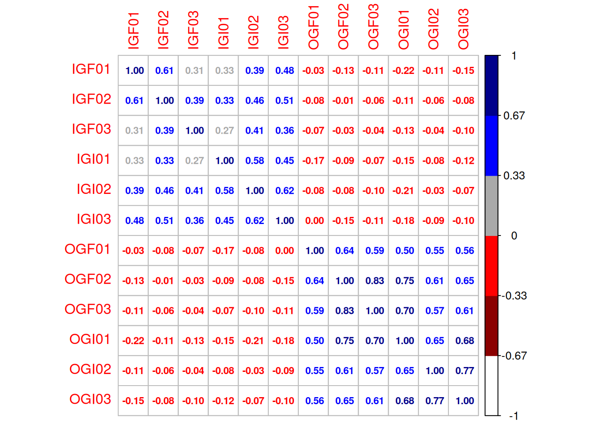
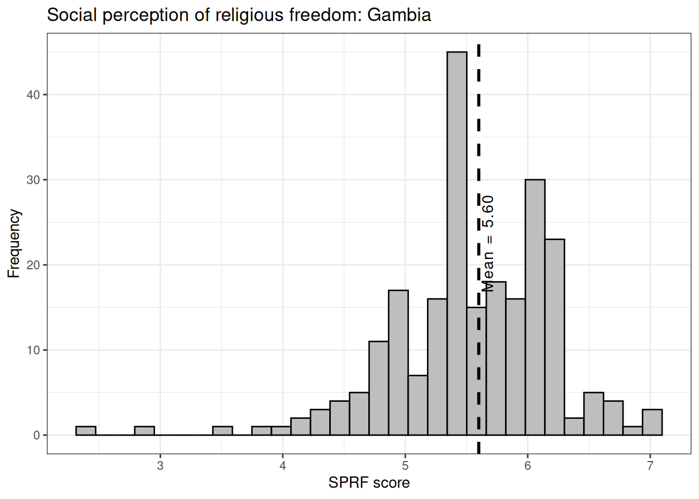
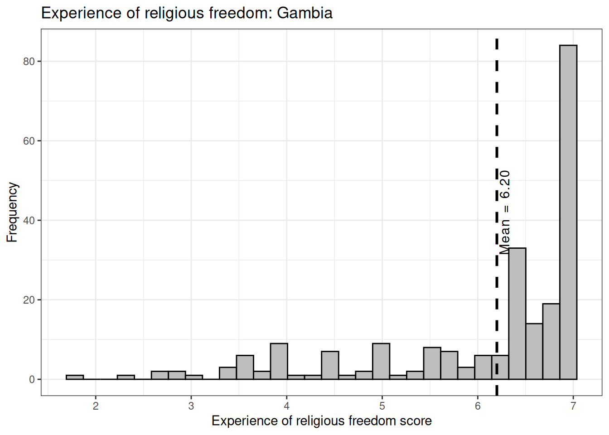
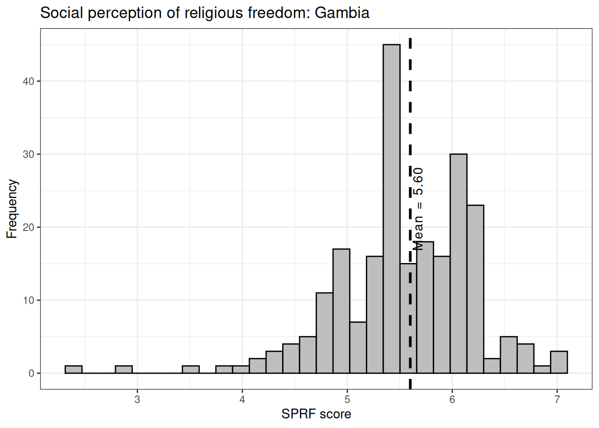

options(digits =2)rm(list=ls())## Install "pacman" package if not installed# (remove the # symbol from the line below):# install.packages("pacman")## Load R packages:pacman::p_load(data.table, tidyverse, haven, labelled, vtable, psych, scales, weights, clipr, forcats, stargazer, ggthemes, ggcharts, geomtextpath, corrplot, tm, readxl)## Import dataset:ds <-read_excel("~/Desktop/oxford/data/gambia/GAMBIA Data Work.xlsx")
Advance Diploma
1
Advance Diploma in Business Studies
1
Advance Diploma in Management
3
Advance Diploma in Nursing
1
Advance Diploma in Tourism Management
1
B.S.C
1
Bachelor
1
Bachelor Degree
1
Bachelor in Business Administration
1
Bachelor's Degree
3
Bachelor's Degree in Political Science
1
Bachelors (ongoing)
1
Bachelors Degree
1
Bachelors in Education
1
Bachelors of Edu.
1
Bsc
1
BSc
3
BSC
5
BSc (Arabic Education)
1
BSc (Hons) Management
1
BSc in Accounting
1
BSc in Economic
1
BSc in Economica
1
BSc in Education
1
BSc in Human Resource
1
BSc in Management
1
BSc in Political Science
1
BsSc of Accounting
1
Certificate
1
Certificate in International Relation
1
Certificate in Management Studies
1
Certificate Level
1
Certificate on Animal Health Product
1
Chartered Banker
1
College
8
College (HTC)
1
College (HWD)
1
College Certificate
1
Degree in Islamic Studies
1
Diploma
7
Diploma 2 Business Administration
1
Diploma in Community Policing
1
Diploma in ICT
2
Diploma in Management
3
Diploma in Theology
1
Diploma in Travel and Tourism
1
Diplomat
1
Form 3 (Old education System)
2
Form 3 (Old Education System)
1
Form 4
1
Form 5 (Old education System)
2
Form 5 (Old Education System)
1
Form 6
1
Gambia College (PTC)
1
GCE Level(WASSCE)
1
Grade 8 ( Upper Basic)
1
Graduate Diploma
1
High School
4
High School (WASSCE)
1
High School Certificate
2
High School Level
1
High School-Islamic Education
1
Higher Diploma
1
Higher Diploma in Education (HDC)
1
Higher Teacher Certificate (HTC)
7
Higher Teacher's Certificate (HTC)
5
Hotel School
1
HTC
2
HTC Primary
1
HTC/HNC
1
Informal Education (Madrasa)
1
Isachetovs Degree
1
Islamic School
1
Islamic Traditional School
1
Junior Sec School
1
Junior Secondary
1
LLB
1
Masters Degree
2
Masters in Economics
1
Masters in Sociology
1
Memorized the Quran (Informal Education)
1
MSC
1
None
1
O Level
2
Ordinary Levels
1
Post Graduate
1
Post Graduate Diploma
1
Primary School
3
Primary Teacher Certificate (PTC)
2
Primary Teacher's Certificate (PTC)
1
PTC
1
Quranic High School Graduate
1
Quranic School
1
Seconary 4
1
Secondary
1
Secondary Four
1
Secondary level
1
Secondary School
6
Senior School Graduation
1
Senior Secondary
2
Senior Secondary School
16
Senior Secondary(WASSCE Certificate)
1
Tertiary
2
Tertiary Education
10
Tertiary level
1
Traditional Quranic Schools
1
Udergraduate
1
Undergraduate Degree in Communications
1
University
9
University Degree
7
University of the Gambia
1
WASSCE
16
WASSCE examination certificate
1
Section 2. Factor Analysis: Group fusion/identification (Version 1)
Display code
## Four ingroup fusion items:# I have a deep emotional bond with the [ingroup].ds$IGF01 <-as.numeric(ds$`Q11.1 Group Bonds`)# I am strong because of the [ingroup].ds$IGF02 <-as.numeric(ds$`Q11.2 Group Bonds`)# I make the [ingroup] strong. ds$IGF03 <-as.numeric(ds$`Q11.3 Group Bonds`)# I am one with the [ingroup]ds$IGF04 <-as.numeric(ds$`Q11.4 Group Bonds`)## Four outgroup fusion items:# I have a deep emotional bond with the [outgroup].ds$OGF01 <-as.numeric(ds$`Q11.5 Group Bonds`)# I am strong because of the [outgroup].ds$OGF02 <-as.numeric(ds$`Q11.6 Group Bonds`)# I make the [outgroup] strong. ds$OGF03 <-as.numeric(ds$`Q11.7 Group Bonds`)# I am one with the [outgroup].ds$OGF04 <-as.numeric(ds$`Q11.8 Group Bonds`)## Four ingroup identification items:# I identify with the [ingroup].ds$IGI01 <-as.numeric(ds$`Q11.9 Group Bonds`)# I have a lot in common with the [ingroup].ds$IGI02 <-as.numeric(ds$`Q11.10 Group Bonds`)# I connect with the values of the [ingroup].ds$IGI03 <-as.numeric(ds$`Q11.11 Group Bonds`)# I feel a sense of belonging with the [ingroup].ds$IGI04 <-as.numeric(ds$`Q11.12 Group Bonds`)## Four outgroup identification items:# I identify with the [outgroup]. ds$OGI01 <-as.numeric(ds$`Q11.13 Group Bonds`)# I have a lot in common with the [outgroup]. ds$OGI02 <-as.numeric(ds$`Q11.14 Group Bonds`)# I connect with the values of the [outgroup]. ds$OGI03 <-as.numeric(ds$`Q11.15 Group Bonds`)# I feel a sense of belonging with the [outgroup]. ds$OGI04 <-as.numeric(ds$`Q11.16 Group Bonds`)
Shorthand for item names: IG = Ingroup, OG = Outgroup F = Fusion, I = Identification So for example: IGF01 = “ingroup fusion: item 1” OGI04 = “outgroup identification: item 4”, and so on
The correlation plot above shows the correlation coefficients between the sixteen different items (eight for ingroup fusion/identification and eight for outgroup fusion/identification).
Scree plot suggests a two factor structure. We will proceed with promax rotation, which assumes that the items are inter-correlated (that is, not independent from each other).
Call:
factanal(x = bonds, factors = 2, rotation = "promax")
Uniquenesses:
IGF01 IGF02 IGF03 IGF04 IGI01 IGI02 IGI03 IGI04 OGF01 OGF02 OGF03 OGF04 OGI01
0.56 0.55 0.73 0.70 0.67 0.46 0.35 0.44 0.53 0.26 0.30 0.35 0.28
OGI02 OGI03 OGI04
0.38 0.34 0.26
Loadings:
Factor1 Factor2
IGF01 0.652
IGF02 0.676
IGF03 0.525
IGF04 0.536
IGI01 0.574
IGI02 0.743
IGI03 0.811
IGI04 0.728
OGF01 0.691
OGF02 0.857
OGF03 0.838
OGF04 0.809
OGI01 0.823 -0.110
OGI02 0.795
OGI03 0.817
OGI04 0.862
Factor1 Factor2
SS loadings 5.31 3.53
Proportion Var 0.33 0.22
Cumulative Var 0.33 0.55
Factor Correlations:
Factor1 Factor2
Factor1 1.000 0.192
Factor2 0.192 1.000
Test of the hypothesis that 2 factors are sufficient.
The chi square statistic is 386 on 89 degrees of freedom.
The p-value is 0.000000000000000000000000000000000000011
We want to split the ingroup/outgroup fusion/identification items into distinct factors. We can examine what the three and four factor solutions looks like.
Section 3. Factor Analysis: Group fusion/identification (Version 2)
The fourth item has been removed from each sub-scale:
Display code
## Remove 4th item from all subscales and retry:## New dataframe:bonds <-cbind.data.frame(ds$IGF01, ds$IGF02, ds$IGF03, ds$IGI01, ds$IGI02, ds$IGI03, ds$OGF01, ds$OGF02, ds$OGF03, ds$OGI01, ds$OGI02, ds$OGI03)names(bonds) <-sub('ds\\$', '', names(bonds))bonds <-na.omit(bonds)mtx1 <-cor(bonds[, c(1:12)])corrplot(mtx1, method ="number", number.cex =0.7,col=c("white", "darkred", "red","darkgrey", "blue", "darkblue"))

Display code
## parallel <- fa.parallel(bonds)
Two factor model:
Display code
# Two factor modelfit04 <-factanal(bonds, 2, rotation="promax")fit04
Call:
factanal(x = bonds, factors = 2, rotation = "promax")
Uniquenesses:
IGF01 IGF02 IGF03 IGI01 IGI02 IGI03 OGF01 OGF02 OGF03 OGI01 OGI02 OGI03
0.59 0.53 0.74 0.63 0.40 0.42 0.53 0.18 0.26 0.30 0.45 0.40
Loadings:
Factor1 Factor2
IGF01 0.627
IGF02 0.691
IGF03 0.511
IGI01 0.600
IGI02 0.774
IGI03 0.759
OGF01 0.691
OGF02 0.909
OGF03 0.865
OGI01 0.812 -0.107
OGI02 0.748
OGI03 0.776
Factor1 Factor2
SS loadings 3.88 2.68
Proportion Var 0.32 0.22
Cumulative Var 0.32 0.55
Factor Correlations:
Factor1 Factor2
Factor1 1.000 0.177
Factor2 0.177 1.000
Test of the hypothesis that 2 factors are sufficient.
The chi square statistic is 183 on 43 degrees of freedom.
The p-value is 0.00000000000000000029
Three factor model
Display code
# Three factor model:fit05 <-factanal(bonds, 3, rotation="promax")fit05
Call:
factanal(x = bonds, factors = 3, rotation = "promax")
Uniquenesses:
IGF01 IGF02 IGF03 IGI01 IGI02 IGI03 OGF01 OGF02 OGF03 OGI01 OGI02 OGI03
0.594 0.523 0.737 0.634 0.394 0.414 0.530 0.072 0.254 0.313 0.245 0.218
Loadings:
Factor1 Factor2 Factor3
IGF01 0.620
IGF02 0.678
IGF03 0.503
IGI01 0.601
IGI02 0.794
IGI03 0.774
OGF01 0.625 0.133
OGF02 1.003 -0.124
OGF03 0.882
OGI01 0.712 -0.112 0.180
OGI02 0.485 0.574
OGI03 0.531 0.538
Factor1 Factor2 Factor3
SS loadings 3.22 2.71 0.72
Proportion Var 0.27 0.23 0.06
Cumulative Var 0.27 0.49 0.55
Factor Correlations:
Factor1 Factor2 Factor3
Factor1 1.000 -0.139 0.399
Factor2 -0.139 1.000 -0.251
Factor3 0.399 -0.251 1.000
Test of the hypothesis that 3 factors are sufficient.
The chi square statistic is 96 on 33 degrees of freedom.
The p-value is 0.000000045
Four factor model
Display code
# Four factor model:fit06 <-factanal(bonds, 4, rotation="promax")fit06
Call:
factanal(x = bonds, factors = 4, rotation = "promax")
Uniquenesses:
IGF01 IGF02 IGF03 IGI01 IGI02 IGI03 OGF01 OGF02 OGF03 OGI01 OGI02 OGI03
0.39 0.37 0.76 0.64 0.01 0.48 0.53 0.03 0.28 0.32 0.25 0.22
Loadings:
Factor1 Factor2 Factor3 Factor4
IGF01 0.901 -0.197
IGF02 0.848
IGF03 0.314 0.215
IGI01 0.517
IGI02 -0.142 1.101
IGI03 0.434 0.335
OGF01 0.659
OGF02 1.059 -0.256
OGF03 0.888 -0.118
OGI01 0.750 -0.107 0.112
OGI02 0.583 0.473
OGI03 0.626 0.435
Factor1 Factor2 Factor3 Factor4
SS loadings 3.7 1.85 1.71 0.527
Proportion Var 0.3 0.15 0.14 0.044
Cumulative Var 0.3 0.46 0.60 0.645
Factor Correlations:
Factor1 Factor2 Factor3 Factor4
Factor1 1.000 -0.189 0.070 -0.723
Factor2 -0.189 1.000 -0.371 0.152
Factor3 0.070 -0.371 1.000 -0.131
Factor4 -0.723 0.152 -0.131 1.000
Test of the hypothesis that 4 factors are sufficient.
The chi square statistic is 45 on 24 degrees of freedom.
The p-value is 0.0051
FA basically suggests that ingroup / outgroup fusion/identification are not distinct factors. Only real split is between ingroup (identification + fusion) as one factor and outgroup (identification + fusion) as another factor. However, I’ll replicate the analysis as before - two constructs for ingroup fusion / identification and a single “bonds” construct for outgroup fusion+identification. Here is the reliability and inter-correlations of the three sub-scales:
## BCL and BBL items:# BCL_01:# Seek out opportunities to bridge social divisions with their opponents, enemies, opposition groups, or other outgroups. # Variables: Q6.1, Q7.1# BCL_02:# Demonstrate willingness to compromise with their opponents, enemies, opposition groups, or other outgroups. # Variables: Q6.2, Q7.2# BCL_03:# Try to understand and empathize with their opponents, enemies, opposition groups, or other outgroups. # Variables: Q6.3, Q7.3# BBL_01:# Represent the interests of the communities and groups that they belong to even at the cost of other groups.# Variables: Q6.4, Q7.4# BBL_02:# Focus on building stronger connections within the communities and groups they belong to rather than building stronger relationships with other groups across boundaries.# Variables: Q6.5, Q7.5# BBL_03:# Try to gain benefits for the communities and groups they belong to even at the expense of other groups.# Variables: Q6.6, Q7.6ds$ENDBCL01 <-as.numeric(ds$`Q6.1 Leadership Quality`)ds$ENDBCL02 <-as.numeric(ds$`Q6.2 Leadership Quality`)ds$ENDBCL03 <-as.numeric(ds$`Q6.3 Leadership Quality`)ds$ENDBBL01 <-as.numeric(ds$`Q6.4 Leadership Quality`)ds$ENDBBL02 <-as.numeric(ds$`Q6.5 Leadership Quality`)ds$ENDBBL03 <-as.numeric(ds$`Q6.6 Leadership Quality`)ds$EXPBCL01 <-as.numeric(ds$`Q7.1 Leadership Experience`)ds$EXPBCL02 <-as.numeric(ds$`Q7.2 Leadership Experience`)ds$EXPBCL03 <-as.numeric(ds$`Q7.3 Leadership Experience`)ds$EXPBBL01 <-as.numeric(ds$`Q7.4 Leadership Experience`)ds$EXPBBL02 <-as.numeric(ds$`Q7.5 Leadership Experience`)ds$EXPBBL03 <-as.numeric(ds$`Q7.6 Leadership Experience`)leadership <-cbind.data.frame(ds$ENDBCL01, ds$ENDBCL02, ds$ENDBCL03, ds$ENDBBL01, ds$ENDBBL02, ds$ENDBBL03, ds$EXPBCL01, ds$EXPBCL02, ds$EXPBCL03, ds$EXPBBL01, ds$EXPBBL02, ds$EXPBBL03)names(leadership) <-sub('ds\\$', '', names(leadership))leadership <-na.omit(leadership)mtx1 <-cor(leadership[, c(1:12)])
Shorthand for item names: END = Endorse, EXP = Experience BCL = BCL, BBL = BBL So for example: ENDBCL01 = “Endorsement of BCL, item 1” EXPBBL02 = “Experience of BBL, item 2”, and so on
The correlation plot above shows the correlation coefficients between the twelve different items (six for endorsement of BCL/BBL, and six for experience of BCL/BBL).
KMO and Bartlett’s test:
Display code
## Kaiser-Meyer-Olkin (KMO) test of factorabilityKMO(r=cor(leadership))
Call:
factanal(x = leadership, factors = 4, rotation = "promax")
Uniquenesses:
ENDBCL01 ENDBCL02 ENDBCL03 ENDBBL01 ENDBBL02 ENDBBL03 EXPBCL01 EXPBCL02
0.667 0.289 0.520 0.611 0.574 0.516 0.005 0.400
EXPBCL03 EXPBBL01 EXPBBL02 EXPBBL03
0.356 0.482 0.462 0.307
Loadings:
Factor1 Factor2 Factor3 Factor4
ENDBCL01 0.350 0.419 -0.151
ENDBCL02 -0.121 0.855
ENDBCL03 0.707 -0.119
ENDBBL01 0.554 0.234 -0.181
ENDBBL02 0.643 0.108 -0.176
ENDBBL03 0.687
EXPBCL01 -0.100 1.006
EXPBCL02 0.322 0.562
EXPBCL03 0.800
EXPBBL01 0.694 0.137
EXPBBL02 0.732 -0.177 0.104
EXPBBL03 0.840
Factor1 Factor2 Factor3 Factor4
SS loadings 2.93 1.46 1.37 1.035
Proportion Var 0.24 0.12 0.11 0.086
Cumulative Var 0.24 0.37 0.48 0.567
Factor Correlations:
Factor1 Factor2 Factor3 Factor4
Factor1 1.000 0.171 0.301 -0.317
Factor2 0.171 1.000 0.220 -0.209
Factor3 0.301 0.220 1.000 -0.320
Factor4 -0.317 -0.209 -0.320 1.000
Test of the hypothesis that 4 factors are sufficient.
The chi square statistic is 92 on 24 degrees of freedom.
The p-value is 0.00000000058
Again, FA structure does not really support a four factor Endorse/Experience BCL/BBL structure. I will still split the sub-scales into those four constructs.
## Four regression models predicting endorsement and experience of BCL / BBL:lm01 <-lm(Endorse_BCL~IG_Fusion+IG_Identification+OG_Bonds+Age+Female+Married+`SES-`,data = ds)lm02 <-lm(Experience_BCL~IG_Fusion+IG_Identification+OG_Bonds+Age+Female+Married+`SES-`, data = ds)lm03 <-lm(Endorse_BBL~IG_Fusion+IG_Identification+OG_Bonds+Age+Female+Married+`SES-`, data = ds)lm04 <-lm(Experience_BBL~IG_Fusion+IG_Identification+OG_Bonds+Age+Female+Married+`SES-`, data = ds)
This set of regression models have additional predictor variables compared to the last set. It adds empathic concern, perspective taking, and perceived history of discrimination as additional predictors.
Display code
## Four regression models predicting endorsement and experience of BCL / BBL:lm01 <-lm(Endorse_BCL~IG_Fusion+IG_Identification+OG_Bonds+empathic_concern+perspective_taking+history_discrimination+Age+Female+Married+`SES-`, data = ds)lm02 <-lm(Experience_BCL~IG_Fusion+IG_Identification+OG_Bonds+empathic_concern+perspective_taking+history_discrimination+Age+Female+Married+`SES-`, data = ds)lm03 <-lm(Endorse_BBL~IG_Fusion+IG_Identification+OG_Bonds+empathic_concern+perspective_taking+history_discrimination+Age+Female+Married+`SES-`, data = ds)lm04 <-lm(Experience_BBL~IG_Fusion+IG_Identification+OG_Bonds+empathic_concern+perspective_taking+history_discrimination+Age+Female+Married+`SES-`, data = ds)
Section 9. Alternative regression models with different outcomes
This set of regression models have different outcome variables which are: outgroup cooperation, outgroup hostility, and willingness to fight outgroup.
Display code
lm01 <-lm(og_cooperation~IG_Fusion+IG_Identification+OG_Bonds+empathic_concern+perspective_taking+history_discrimination+Age+Female+Married+`SES-`, data = ds)lm02 <-lm(og_hostility~IG_Fusion+IG_Identification+OG_Bonds+empathic_concern+perspective_taking+history_discrimination+Age+Female+Married+`SES-`, data = ds)lm03 <-lm(fight_outgroup~IG_Fusion+IG_Identification+OG_Bonds+empathic_concern+perspective_taking+history_discrimination+Age+Female+Married+`SES-`, data = ds)
ds$religious_freedom_per_01 <-as.numeric(ds$`Q16.1 Religious Freedom`)ds$religious_freedom_per_02a <-as.numeric(ds$`Q16.2 Religious Freedom`)ds$religious_freedom_per_02 <- (8- ds$religious_freedom_per_02a)ds$religious_freedom_per_03 <-as.numeric(ds$`Q16.3 Religious Freedom`)ds$religious_freedom_per_04 <-as.numeric(ds$`Q16.4 Religious Freedom`)ds$religious_freedom_per_05 <-as.numeric(ds$`Q16.5 Religious Freedom`)ds$religious_freedom_per_06 <-as.numeric(ds$`Q16.6 Religious Freedom`)ds$religious_freedom_per_07 <-as.numeric(ds$`Q16.7 Religious Freedom`)ds$religious_freedom_per_08 <-as.numeric(ds$`Q16.8 Religious Freedom`)ds$sprf <- (ds$religious_freedom_per_01+ds$religious_freedom_per_02+ ds$religious_freedom_per_03+ds$religious_freedom_per_04+ ds$religious_freedom_per_05+ds$religious_freedom_per_06+ ds$religious_freedom_per_07+ds$religious_freedom_per_08)/8summary(ds$sprf)
Min. 1st Qu. Median Mean 3rd Qu. Max. NA's
2.4 5.2 5.6 5.6 6.1 7.0 5
Display code
ds %>%drop_na(sprf)%>%ggplot(aes(x = sprf))+geom_histogram(color ="black",fill ="gray",bins =30)+geom_textvline(label ="Mean = 5.60", xintercept =5.60, vjust =1.1, lwd =1.05, linetype =2)+labs(x ="SPRF score", y ="Frequency", title ="Social perception of religious freedom: Gambia")+theme_bw()

Experience of religious freedom
Display code
ds$religious_freedom_exp_01a <-as.numeric(ds$`Q17.1 Life experience`)ds$religious_freedom_exp_01 <- (8- ds$religious_freedom_exp_01a)ds$religious_freedom_exp_02a <-as.numeric(ds$`Q17.2 Life experience`)ds$religious_freedom_exp_02 <- (8- ds$religious_freedom_exp_02a)ds$religious_freedom_exp_03a <-as.numeric(ds$`Q17.3 Life experience`)ds$religious_freedom_exp_03 <- (8- ds$religious_freedom_exp_03a)ds$religious_freedom_exp_04a <-as.numeric(ds$`Q17.4 Life experience`)ds$religious_freedom_exp_04 <- (8- ds$religious_freedom_exp_04a)ds$religious_freedom_exp_05a <-as.numeric(ds$`Q17.1 Life experience`)ds$religious_freedom_exp_05 <- (8- ds$religious_freedom_exp_05a)ds$religious_freedom_exp_06a <-as.numeric(ds$`Q17.1 Life experience`)ds$religious_freedom_exp_06 <- (8- ds$religious_freedom_exp_06a)ds$exp_religious_freedom <- (ds$religious_freedom_exp_01+ds$religious_freedom_exp_02+ ds$religious_freedom_exp_03+ds$religious_freedom_exp_04+ ds$religious_freedom_exp_05+ds$religious_freedom_exp_06)/6summary(ds$exp_religious_freedom)
Min. 1st Qu. Median Mean 3rd Qu. Max. NA's
1.8 5.5 6.7 6.1 7.0 7.0 6
Display code
ds %>%drop_na(exp_religious_freedom)%>%ggplot(aes(x = exp_religious_freedom))+geom_histogram(color ="black",fill ="gray",bins =30)+geom_textvline(label ="Mean = 6.20", xintercept =6.20, vjust =1.1, lwd =1.05, linetype =2)+labs(x ="Experience of religious freedom score", y ="Frequency", title ="Experience of religious freedom: Gambia")+theme_bw()

Experience of religious freedom based on religious affiliation
ds %>%drop_na(religion, exp_religious_freedom)%>%ggplot(aes(y = exp_religious_freedom, x = religion))+geom_boxplot()+labs(x ="", y ="Experience of religious freedom score", title ="Experience of religious freedom: Gambia")+coord_flip()+theme_bw()
Section 11. Positive/Negative contact with outgroup
Call:
factanal(x = ig_marriage, factors = 1, rotation = "promax")
Uniquenesses:
intergroup_marriage_01 intergroup_marriage_02 intergroup_marriage_03
0.36 0.33 0.26
intergroup_marriage_04
0.39
Loadings:
Factor1
intergroup_marriage_01 0.80
intergroup_marriage_02 0.82
intergroup_marriage_03 0.86
intergroup_marriage_04 0.78
Factor1
SS loadings 2.67
Proportion Var 0.67
Test of the hypothesis that 1 factor is sufficient.
The chi square statistic is 15 on 2 degrees of freedom.
The p-value is 0.00045
Based on the above output for factor analysis and reliability analysis, the “support for intergroup marriage” scale is highly reliable. Here is the visualization for the scale:
Min. 1st Qu. Median Mean 3rd Qu. Max. NA's
1.0 5.5 6.0 5.9 6.8 7.0 4
Display code
ds %>%drop_na(endorse_intergroup_marriage)%>%ggplot(aes(x = endorse_intergroup_marriage))+geom_histogram(color ="black",fill ="gray",bins =30)+geom_textvline(label ="Mean = 5.90", xintercept =5.90, vjust =1.1, lwd =1.05, linetype =2)+labs(x ="Intergroup marriage endorsement score", y ="Frequency", title ="Support for intergroup marriage: Gambia")+theme_bw()
Section 13. Outgroup affect
Outgroup affect: Scale construction
Display code
## Feel outgroup: negative to positive:ds$ogaf1 <-as.character(ds$`Q14.1 Feel Outgroup- Negative to Positive`)## convert to sentence case:ds$ogaf1 <-gsub("(\\D)(\\D+)", "\\U\\1\\L\\2", ds$ogaf1, perl =TRUE)ds$ogaf1 <-ifelse(ds$ogaf1 =="Very negative", "Very negative", ds$ogaf1)ds$og_aff_01 <-factor(ds$ogaf1, levels=c("Very negative", "Moderately negative","A little negative", "Neutral", "A little positive", "Moderately positive", "Very positive"))## Feel Outgroup: Hostile to friendly:ds$ogaf2 <-as.character(ds$`Q14.2 Feel Outgroup - Hostile to Friendly`)## convert to sentence case:ds$ogaf2 <-gsub("(\\D)(\\D+)", "\\U\\1\\L\\2", ds$ogaf2, perl =TRUE)ds$og_aff_02 <-factor(ds$ogaf2, levels =c("Very hostile", "Moderately hostile", "A little hostile", "Neutral", "A little friendly", "Moderately friendly","Very friendly"))table(ds$og_aff_02)
Very hostile Moderately hostile A little hostile Neutral
6 8 13 40
A little friendly Moderately friendly Very friendly
66 43 59
Display code
## Feel Outgroup: Suspicious to trusting:ds$ogaf3 <-as.character(ds$`Q14.3 Feel Outgroup - Suspicious to Trusting`)## convert to sentence case:ds$ogaf3 <-gsub("(\\D)(\\D+)", "\\U\\1\\L\\2", ds$ogaf3, perl =TRUE)# remove extra spaces:ds$ogaf3 <-gsub("\\s+"," ",ds$ogaf3, perl =TRUE)ds$ogaf3 <-ifelse(ds$ogaf3 =="Verytrusting", "Very trusting", ds$ogaf3)ds$og_aff_03 <-factor(ds$ogaf3, levels =c("Very suspicious", "Moderately suspicious", "A little suspicious", "Neutral","A little trusting", "Moderately trusting","Very trusting"))table(ds$og_aff_03)
Very suspicious Moderately suspicious A little suspicious
8 14 23
Neutral A little trusting Moderately trusting
62 55 32
Very trusting
39
Display code
## Feel Outgroup: Contempt to respect:ds$ogaf4 <-as.character(ds$`Q14.4 Feel Outgroup - Contempt to Respect`)## convert to sentence case:ds$ogaf4 <-gsub("(\\D)(\\D+)", "\\U\\1\\L\\2", ds$ogaf4, perl =TRUE)ds$og_aff_04 <-factor(ds$ogaf4, levels =c("A lot of contempt", "Moderate contempt","A little contempt", "Neutral", "A little respect", "Moderate respect","A lot of respect"))table(ds$og_aff_04)
A lot of contempt Moderate contempt A little contempt Neutral
1 4 17 42
A little respect Moderate respect A lot of respect
59 39 72
Display code
## Feel Outgroup: Concerned to Unconcerned:ds$ogaf5 <-as.character(ds$`Q14.5 Feel Outgroup - Concerned to Unconcerned`)## convert to sentence case:ds$ogaf5 <-gsub("(\\D)(\\D+)", "\\U\\1\\L\\2", ds$ogaf5, perl =TRUE)# remove extra spaces:ds$ogaf5 <-gsub("\\s+"," ",ds$ogaf5, perl =TRUE)ds$ogaf5 <-ifelse(ds$ogaf5 =="Moderately unoncerned", "Moderately unconcerned", ds$ogaf5)ds$og_aff_05 <-factor(ds$ogaf5, levels =c("Very concerned", "Moderately concerned", "A little concerned", "Neutral","A little unconcerned", "Moderately unconcerned","Very unconcerned"))table(ds$og_aff_05)
Very concerned Moderately concerned A little concerned
30 19 32
Neutral A little unconcerned Moderately unconcerned
62 31 28
Very unconcerned
32
Display code
## Feel Outgroup: Threatened to Relaxed:ds$ogaf6 <-as.character(ds$`Q14.6 Feel Outgroup - Threatened to Relaxed`)## convert to sentence case:ds$ogaf6 <-gsub("(\\D)(\\D+)", "\\U\\1\\L\\2", ds$ogaf6, perl =TRUE)ds$og_aff_06 <-factor(ds$ogaf6, levels =c("Very threatened", "Moderately threatened", "A little threatened", "Neutral", "A little relaxed", "Moderately relaxed", "Very relaxed"))table(ds$og_aff_06)
Very threatened Moderately threatened A little threatened
7 2 17
Neutral A little relaxed Moderately relaxed
66 47 27
Very relaxed
66
Based on the output of factor analysis as well as reliability, it seems like one item (“concerned to unconcerned”) is problematic. Here is the scale without that item:
Based on the above output for factor analysis and reliability analysis, the “outgroup affect” scale is highly reliable if we drop the problematic item (“concerned to unconcerned”). Here is the visualization for the scale after dropping the problematic item:
This set of regression models have additional predictors: frequency of positive and negative contact, and interaction between perspective taking and perceived history of discrimination
Display code
ds$freq_positive_contact <- ds$pc02ds$freq_negative_contact <- ds$nc02ds$perspectiveXdiscrimination <- ds$perspective_taking*ds$history_discrimination## Four regression models predicting endorsement and experience of BCL / BBL:lm01 <-lm(Endorse_BCL~IG_Fusion+IG_Identification+OG_Bonds+freq_positive_contact+freq_negative_contact+empathic_concern+perspective_taking+history_discrimination+perspectiveXdiscrimination+Age+Female+Married+`SES-`, data = ds)lm02 <-lm(Experience_BCL~IG_Fusion+IG_Identification+OG_Bonds+freq_positive_contact+freq_negative_contact+empathic_concern+perspective_taking+history_discrimination+perspectiveXdiscrimination+Age+Female+Married+`SES-`, data = ds)lm03 <-lm(Endorse_BBL~IG_Fusion+IG_Identification+OG_Bonds+freq_positive_contact+freq_negative_contact+empathic_concern+perspective_taking+history_discrimination+perspectiveXdiscrimination+Age+Female+Married+`SES-`, data = ds)lm04 <-lm(Experience_BBL~IG_Fusion+IG_Identification+OG_Bonds+freq_positive_contact+freq_negative_contact+empathic_concern+perspective_taking+history_discrimination+perspectiveXdiscrimination+Age+Female+Married+`SES-`, data = ds)
Same predictors as section 14 above, but with different outcomes. This set of regression models has an additional outcome variable: affect towards outgroup.
Display code
## Four regression models:lm01 <-lm(og_cooperation~IG_Fusion+IG_Identification+OG_Bonds+freq_positive_contact+freq_negative_contact+empathic_concern+perspective_taking+history_discrimination+perspectiveXdiscrimination+Age+Female+Married+`SES-`, data = ds)lm02 <-lm(og_hostility~IG_Fusion+IG_Identification+OG_Bonds+freq_positive_contact+freq_negative_contact+empathic_concern+perspective_taking+history_discrimination+perspectiveXdiscrimination+Age+Female+Married+`SES-`, data = ds)lm03 <-lm(fight_outgroup~IG_Fusion+IG_Identification+OG_Bonds+freq_positive_contact+freq_negative_contact+empathic_concern+perspective_taking+history_discrimination+perspectiveXdiscrimination+Age+Female+Married+`SES-`, data = ds)lm04 <-lm(og_affect~IG_Fusion+IG_Identification+OG_Bonds+freq_positive_contact+freq_negative_contact+empathic_concern+perspective_taking+history_discrimination+perspectiveXdiscrimination+Age+Female+Married+`SES-`, data = ds)
Below are the individual Cronbach’s alpha for each of the seven subscales, followed by their individual visualizations, followed by the correlation between the seven sub-scales


Social perception of religious freedom
Display code
Display code
